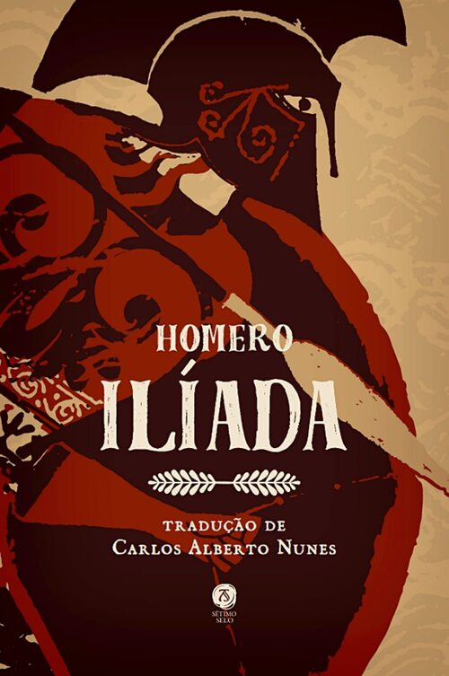

Ilíada - Capa comum
Homero
R$ 61,94
|  |
Obra-prima do gênero épico, a Ilíada representa o nascimento e o momento fundador de toda a tradição literária do Ocidente. Composta de material heterogêneo e da mais variada procedência, podemos observar na Ilíada o gênio literário de Homero, o maior dos poetas, em todo seu vigor criativo de linhas sóbrias e de equilíbrio perfeito. A narração dos cinquenta dias do nono ano da guerra de Troia conduz o leitor pela inicial ira de Aquiles, herói invencível e líder do exército aqueu, contra Agamémnone, culpado de ter sequestrado a formosa Briseide, até o desfecho no funeral de Heitor, o guerreiro troiano demasiado humano que viu seus homens derrotados pela astúcia de Odisseu. É nessa multiplicidade de episódios que surgem as figuras de Aquiles, Páris, Helena, Heitor, Menelau, Odisseu, Agamémnone e tantos outros. Acompanhada de prefácio, introdução e dicionário dos principais personagens, termos e lugares, a clássica e consagrada tradução de Carlos Alberto Nunes oferece ao leitor toda a beleza e a musicalidade do original grego desse insuperável modelo da literatura ocidental. |
|---|
Editora: Sétimo Selo; 1ª edição (19 janeiro 2022)
|
Voltar